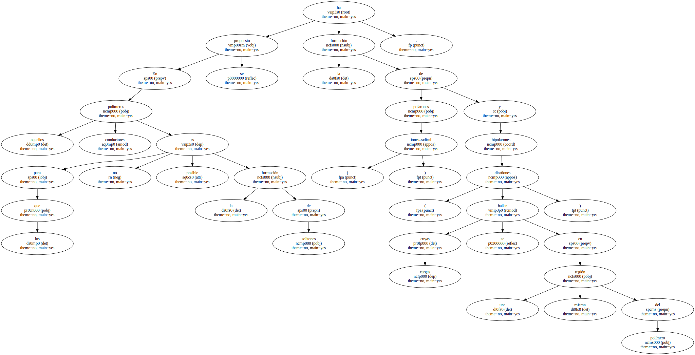
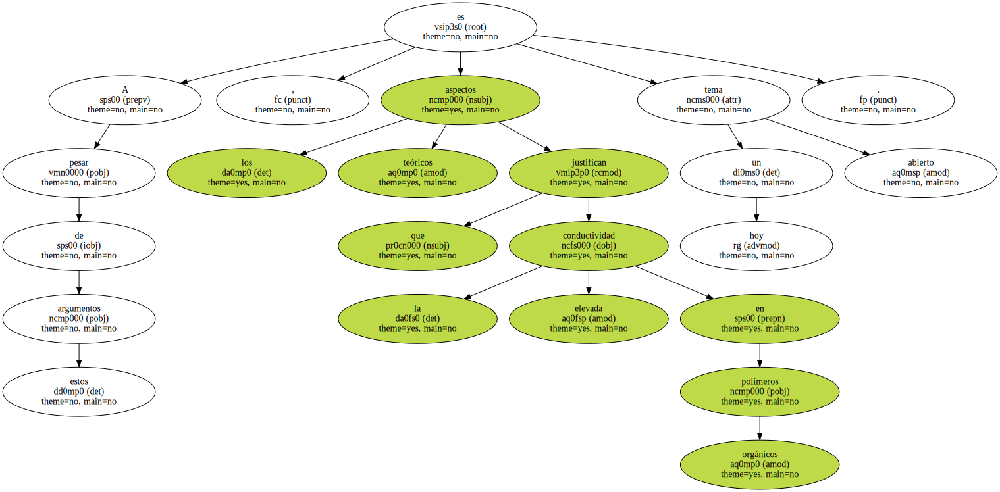
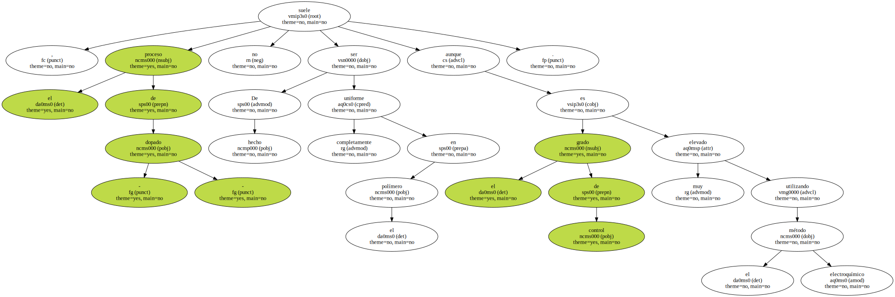
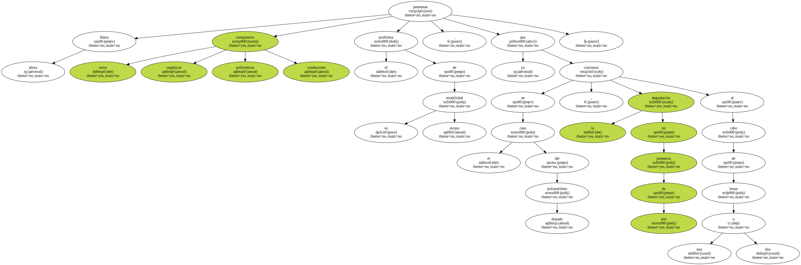
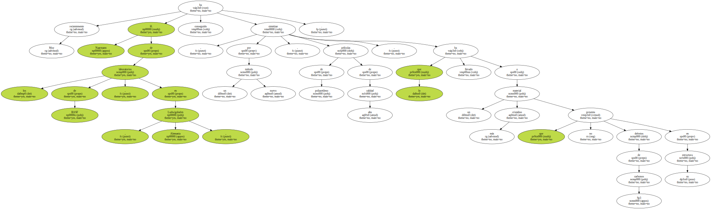
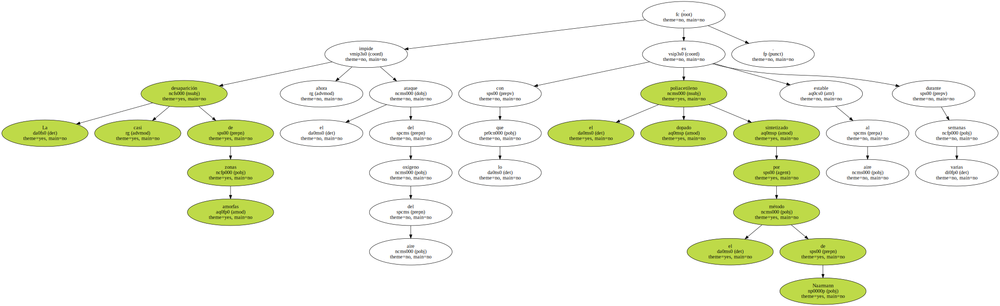
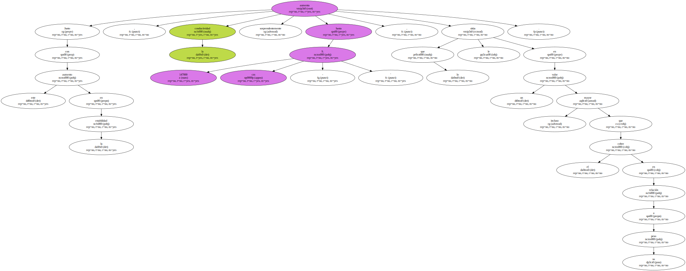
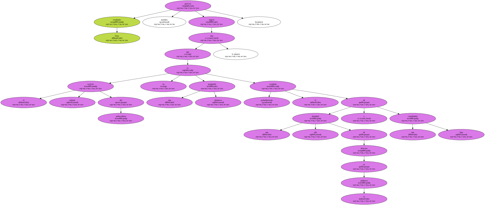

Schrieffer y Heeger , de la Universidad de Santa Bárbara en California , sugieren la formación de solitones ( básicamente carbocationes deslocalizados ).

En aquellos polímeros conductores para los que no es posible la formación de solitones se ha propuesto la formación de polarones ( iones-radical ) y bipolarones ( dicationes cuyas cargas se hallan en una misma región del polímero ).
A pesar de estos argumentos , los aspectos teóricos que justifican la elevada conductividad en polímeros orgánicos es hoy un tema abierto.
De hecho , el proceso de - dopado - no suele ser completamente uniforme en el polímero aunque el grado de control es muy elevado utilizando el método electroquímico.
Por otro lado , la influencia de la especie dopante en el proceso de conducción aún no está totalmente esclarecida.

Hasta ahora estos compuestos orgánicos poliméricos conductores presentan el problema de su escasa estabilidad , ya que en el caso del poliacetileno dopado , la degradación en presencia de aire comienza al cabo de una o dos horas.
Muy recientemente H. Naarmann de los laboratorios de BASF , en Ludwigshafen , Alemania , ha conseguido sintetizar , por un nuevo método , películas de poliacetileno de alta calidad , lo que ha llevado a un material más cristalino que no presenta defectos de carbonos Sp3 en su estructura.
La casi desaparición de zonas amorfas impide ahora el ataque del oxígeno del aire , con lo que el poliacetileno dopado sintetizado por el método de Naarmann es estable al aire durante varias semanas.
Junto con este aumento en la estabilidad , la conductividad aumenta sorprendentemente hasta 147000 S. cm - ' , lo que le sitúa en un valor incluso mayor que el cobre en relación a su peso.
Estos resultados parecen también sugerir que el carácter aislante del poliacetileno no es una propiedad intrínseca , sino probablemente el resultado de una alta densidad de defectos en el polímero y una baja cristalinidad.
